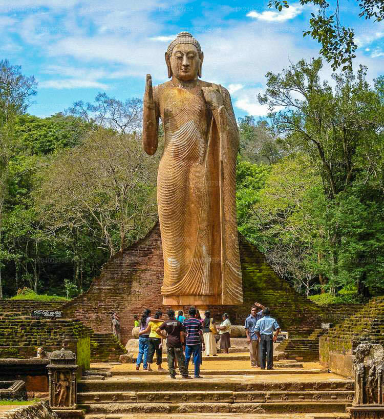
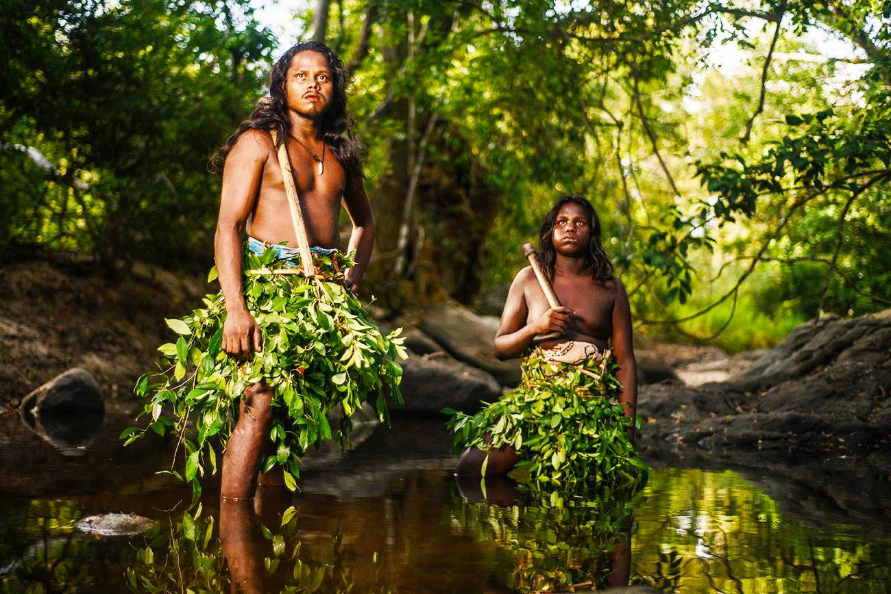
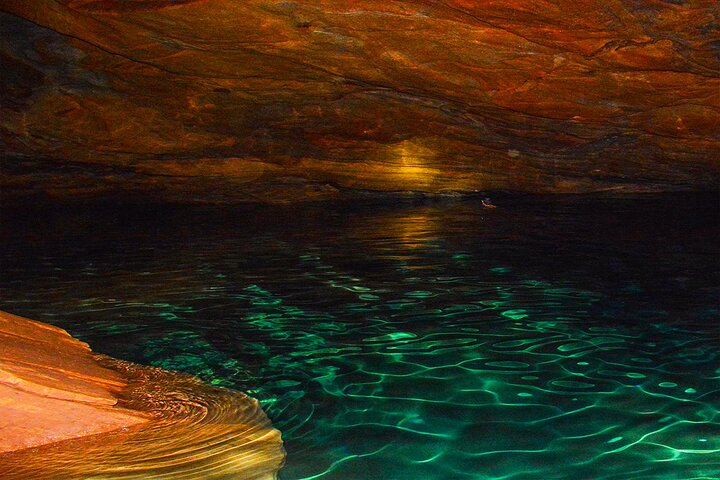
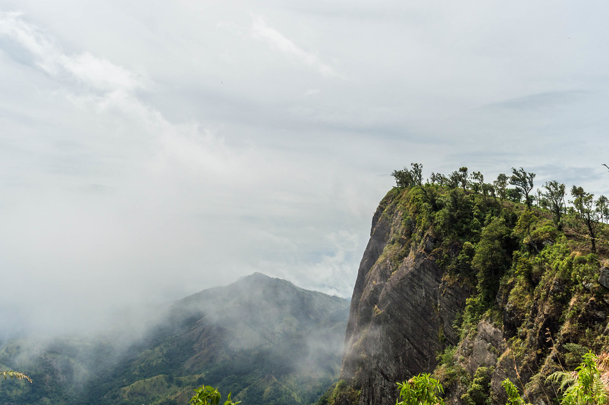

The Best Places to Travel in Uwa Province...
|  |
The Maligawila Buddha statue is a statue of Buddha in Sri Lanka, engraved with a large statue. Limestone rock in the middle of the 7th century was a prince named Aggabodhi. The longest free ancient statue of the Buddha found in the world. It was broken into several pieces when it was discovered in 1951 The statue was rebuilt and revived in 1980 under the direction of then-president Ranasinghe Premadasa.
|  |
This article discusses a village within the Badulla District of Sri Lanka. For sacred places of traditional religions in the Philippines, see Dambana. Dambana is a village within the Badulla District of Sri Lanka. It is near the town of Mahiyangana. Known as a refuge for the indigenous people of Vedda and their fearsome Vedda language. It is well known for it eco-tourism projects, managed by Eco Team. In 2010 it had about 1000 people all of them Vedda families.
|  |
The Nil Diya Pokuna is an underwater lake located in a cave or cavern in Ella Sri Lanka believed to have been built by King Ravana. The lake is 80 meters deep inside the mountain cave at Karandagolla. The cave can be accessed by two private entrances, where the best known is located in the local forest reserve. The resident then obtained a second entrance to the private area. The cave has a rabbit hole where the pond can be reached. The Nil Diya Pokuna in Ella is a place to be explored by young people and should be noted during this journey. The lake water is clear and gives a blue hue when it reflects light.
|  |
Madulsima is a village located in the Uva province of Sri Lanka. It is a beautiful mountain village with a reputation for climbing and camping. Another famous The main attraction is the Madulsima Mini World's End which is a popular hiking destination in the area